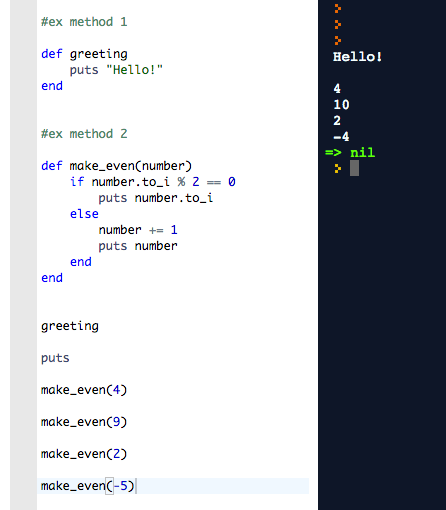
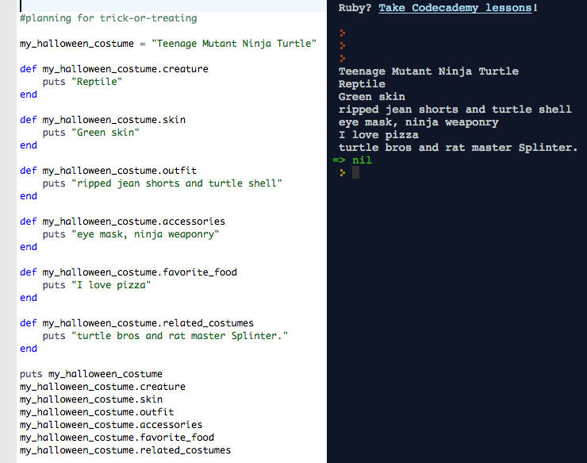

Creating instances in a Class of Halloween characters

This week at DBC, we have been learning about classes, instance variables and methods in Ruby. It was a little confusing to me at first, but I am beginning to have a clearer understanding. I hope this post might be useful to other beginners. So first, we'll do a quick review, and then an example of using a class to store information about potential Halloween costumes.
Review: what's a method?
A method is simply a mini program in Ruby. It can require an argument input (any object - string, array, number, depending on the method), or none. For instance, checkout these mini methods:
.Greeting doesn't take any input, but outputs a simple string when called. .make_even
requires an argument from the user and adds 1 to the number provided, if odd.
Over the past couple of weeks, we have also seen objects and methods used to store information. We can create an object (string, array, hash), and then use methods to store and extract information. For instance, if I were creating a profile of a Teenage Mutant Ninja Turtle Halloween costume, I could create a new object and organize information using methods that would return costume details:
Each method is set up to puts the information about the costume to the console, when called. So, if I wanted to know what props to purchase for my badass turtle costume, I could call my_halloween_costume.accessories. In this example, my_halloween_costume is our object, and all of the methods are designed for it alone.

Classes
But what if my sister was planning to be Dracula? What if I were having a Halloween party and wanted to consider several costume options for friends?
Ruby classes give you a way to create a model object and group of methods that is scaleable across many objects of the same type. We can create a class called Halloween_costume, which is a template. Then, we can use the class template to create infinite new instances of the class, all objects that will behave similarly, and have similar types of information about them. For instance, we can create an instance of Halloween_costume to represent the same Ninja Turtle object we created earlier:
(I left out a couple of costume qualities to truncate example.)
We still get back the same information, and a nice paragraph that sums up
the costume stats. We could create many additional costumes using this model, each
time saying New_Costume = Halloween_costume.new(x,y,z,a,b). Each one of these costumes would be an instance of the class. Note that this class is set up to require the user to provide 5 arguments when creating a new instance of the class. (That's the def
initialize part. If you don't want anything to happen when a new instance of the class is created, it is perfectly fine to omit a def initialize method.)
A couple of additional points: the @variables are instance variables, and have @ signs. That means that they are available to any instance of the class. The methods #skin, #outfit, etc. are instance methods. Class names usually begin with a Capital.
What's the difference between an instance method and a class method?
This is a little confusing. A class method acts on the class itself (in this case Halloween_costume). It does not target instances of the class directly. If you wanted to create a class method in the body under def class Halloween_costume, you would have to write: def self.new_class_method_for_halloween_costume. The other definitions that appear within the body of the class definition are actually not referring to the class itself, but to a theoretical instance of the class that you will create in the future using the present template. That is, def bio will target a particular halloween costume we create, not the class of Halloween costumes in platonic form. Similarly, an instance @variable will be available to a particular instance of the class and communicable between its different methods (if given the right attributes). However, the class as a whole won't have a @costume variable set in stone simply because one instance was @costume = "Ninja Turtle". There are also class variables - which are written @@variable - but we will save those for another day.
Thanks for reading!
 Twitter
Twitter GitHub
GitHub